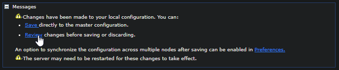
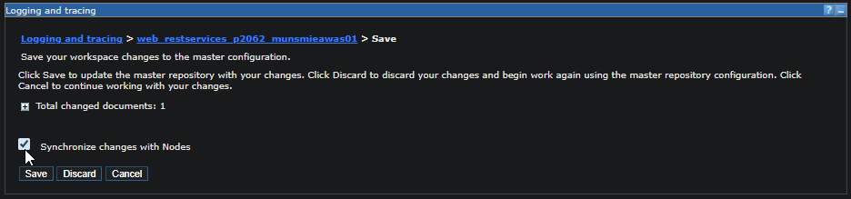

BACKGROUND
In some cases, there may be a need to enable finer trace level logging to troubleshoot.
ITEMS FOR INVESTIGATION
- ODR Hostname
- Package to set trace for
- Cluster that service is mapped to
STEPS
In the Websphere Admin Console on the left-hand side, expand 'Troubleshooting' and click on Logs and trace
Look for the cluster the service is running on, you will need to enable tracing on each one (that is active/running indicated by green arrow).
Under 'General Properties', click on Change log detail levels
Note the default is "*=info", for reference if you need to set back to original.
IMPORTANT
Take note of the Configuration and Runtime tabs
Typically, you will want to setup under the "Runtime" tab. When setup under Runtime, the trace takes effect immediately and resets back to default when the JVM's are cycled. This is recommended to prevent a mistake when forgetting to remove the trace.
If set under "Configuration", the trace will stick even if the servers are cycled - which is why servers need to be restarted after setting up here. In some cases, this may be the better option - for instance when the issue is intermittent or not easily reproducible. But you MUST remember to remove the trace after it's no longer needed.
Under "Change log detail levels", expand Components and Groups
Then expand "All Components" and drill down to the package you're needing to enable tracing for. Click on it and select "finest":
Afterwards, click the "OK" at the bottom. Then click "Review":
Check the "Synchronize changes with Nodes", and "Save"
You will see a current status for when the sync is complete. You can then navigate to the same location as the SystemOut.log, and you'll see the addition of a trace.log with the trace output logged there. You will often want to grab both.